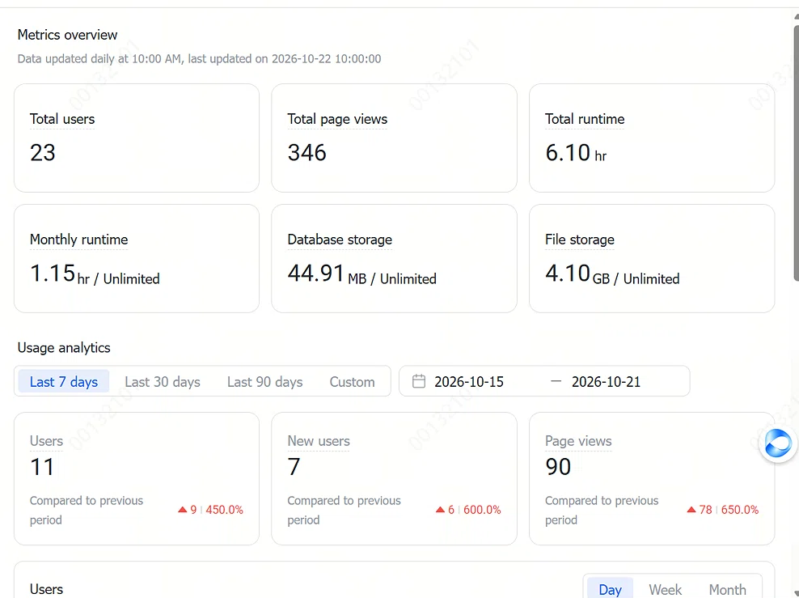
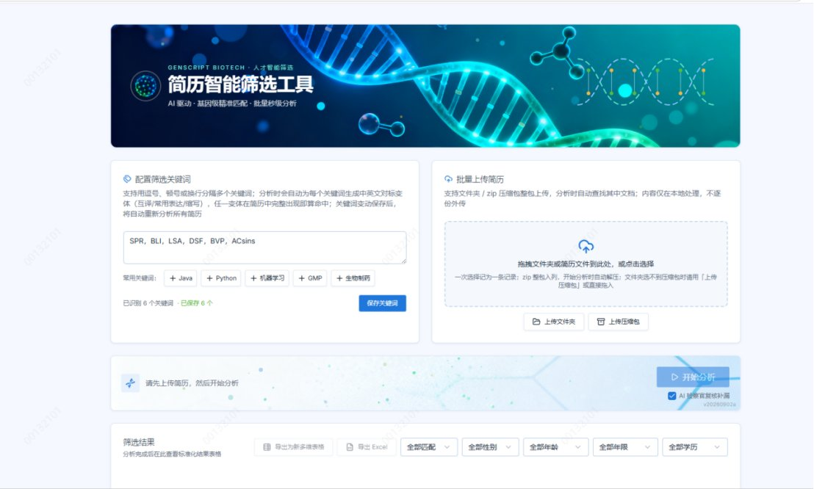
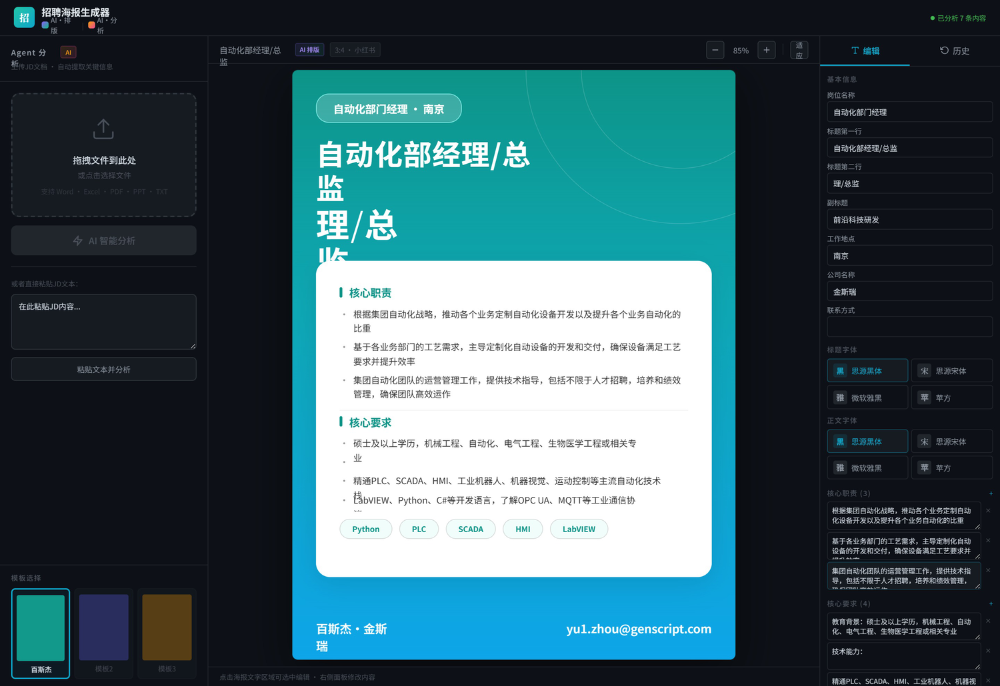

§ PENG TIANJIAO · 医学情报出身 · AI 产品经理 · AI Coding 全栈交付
我做的 AI 产品
业务每天都在用
医生式的证据标准 + 工程式的自己交付：同一份 HR 问卷分析从 3 天 → 2 分钟，一个招聘海报生成器 8 天从 MVP 跑到上线。
不是 Demo，是 17 个上线运行、被业务当日常工具在用的产品。
面试可现场演示一次「人机结对 → 需求到上线」的完整过程
LLM / 多模态Agent 与工作流编排RAG · 知识库Prompt 工程
效果评估 · 幻觉率A/B 实验Badcase 复盘埋点 / 看板AI Native 工作流
真实运行记录 · 金斯瑞任务系统
1189条
累计派单（全量记录，不是试用流水）
竞对招聘分析师单产品 356 条 · 占全部派单 30%
3 天 → 2 分钟
HR 问卷分析
22 家子公司 × 11 部门 × 7 维度
6900+
简历筛选处理量
23 用户 / 346 次访问
17
自研产品上线
技能 + 智能体 + Web 应用 + 工作流
8 天
MVP → 上线
一个人完成需求 / 开发 / 上线
10 万+
Aily AI 点数消耗
全链路真实调用，不是白嫖额度
同岗位常见产出 VS 我的产出
| 维度 | 同岗位常见产出 | 我的产出 |
|---|---|---|
| 需求来源 | 访谈、工单、二手转述 | 我在招聘业务一线，痛点每周发生在自己身上 |
| 交付物 | PRD + 原型，等研发排期 | 自己写到上线：海报生成器 8 天 MVP → 上线 |
| 上线验证 | 靠主观反馈判断有没有人用 | 任务系统 1189 条 · 单产品 356 条占 30% · 6900+ 份简历 |
| AI 可信度 | 模型给结论，无法核查 | 规则 + LLM 双校验、4 色证据分级、结论可溯源 |
| 覆盖范围 | 1-2 个点状工具 | 17 个产品分层复用：洞察 → 获取 → 筛选 → 甄别 → 留存 |
| 迭代方式 | 交付即结束 | 35 版 / 200+ 次迭代；13 个低频应用主动收敛下线 |



上面每一条都能落到具体证据上：一手需求长成 6 个在用产品，AI Coding 让海报生成器 8 天上线，医学情报 + 知识工程让背调沉淀出 18 项核查准则——这三点交叉的地方，才是我能独立把「非标信息 → 结构化 → 可信输出」做成产品的原因。下面每项能力，点开就是支撑它的产品、数据与复盘。
能力矩阵
— 点开任一项，看它落在哪些产品上（项目说明、结果数据、复盘都在里面）
岗位要求对照
— 头部互联网公司 AI 产品经理 JD 的共性要求，逐条给出我的证据（点右侧能力编号可展开）
| 岗位共性要求 | 我的证据 | 能力 |
|---|---|---|
| 理解 LLM / Agent / RAG 能力边界，判断什么该用 AI 做 | 17 个产品覆盖 Agent / Skill / RAG / 工作流；竞对分析做五层研判 + 公平性三对齐 | C-03 → |
| 0→1 独立构建、Builder 心态（不只写 PRD） | 招聘海报生成器 8 天从 MVP 到上线，需求 / 开发 / 上线一人闭环 | C-04 → |
| 效果评估与指标体系（完成率、准确率、幻觉率、满意度） | 4 色证据分级 + 18 项核查准则，初筛 0 假阳性，每条结论可溯源 | C-05 → |
| 数据分析与 A/B 实验驱动增长 | 任务系统 1189 条全量、单产品 356 条占 30%、Web 23 用户 / 346 访问；掌握 ab-test-setup 方法论 | C-02 → |
| 深入业务工作流，抽象可复用的 Agent 能力 | 6 个一线痛点 → 6 个在用产品；术语 / 背调技能安装量 37 / 36，跨域复用 | C-01 → |
| AI 原生工作流 / 人机结对（面试需展示案例） | 调研、文档、原型、数据分析、测试全环节 AI 结对；可现场演示从需求到上线全过程 | C-04 → |
| 线上监控、Badcase 复盘与灰度迭代闭环 | 35 版 / 200+ 次迭代；Badcase 按检索层 / 意图层 / 输出层分类定位后再改 | C-06 → |
| 跨团队协同、项目管理与合规风控 | 独立对接业务方与算法 / 工程；海报模板 RBAC 鉴权、敏感信息局部遮盖 | C-01 → |
口径说明：上表按字节跳动、百度、腾讯、快手、美团公开招聘页面的 AI 产品经理岗位描述归纳高频共性要求，非逐字引用；每条右侧对应我在该要求上的证据。
彭天娇 · PENG TIANJIAO
每条数据均可展开至原始证据
截图为脱敏处理版 · 涉企业内部数据的字段已局部遮盖